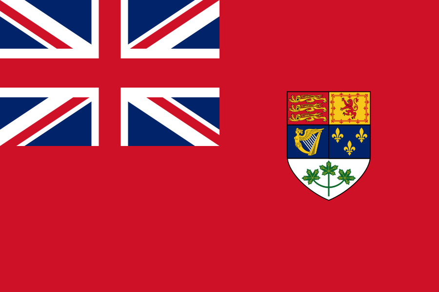
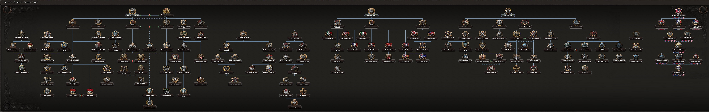
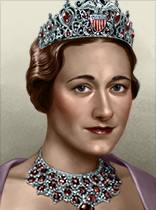
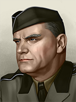
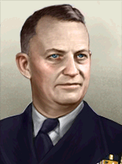
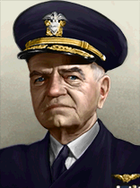
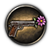
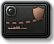
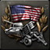
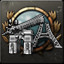

| 陆军科技 | 海军科技 | 空军科技 | 电子与工业 |
|---|---|---|---|
无
|
|
没有
|
|
| 陆军学说 | 海军学说 | 空军学说 |
|---|---|---|
|
|
|
原页面：United States
The  美国, also known as 美国, is a major country in North America with a population of 122.92 M (core) and an additional 2.14 M (non-core). It borders
美国, also known as 美国, is a major country in North America with a population of 122.92 M (core) and an additional 2.14 M (non-core). It borders  墨西哥 to the south. Despite its immense wealth in resources and industry, the U.S. is heavily restrained by its laws and national spirits at the start of the game. Should the country remove these restrictions and build up its military might, it can easily become a world superpower.
墨西哥 to the south. Despite its immense wealth in resources and industry, the U.S. is heavily restrained by its laws and national spirits at the start of the game. Should the country remove these restrictions and build up its military might, it can easily become a world superpower.
The  美国 emerged from the First World War as the world's largest industrial power, having played a decisive role in securing the Allied victory. Yet despite this newfound status, American public opinion in the post-war years turned sharply inward. The Senate rejected membership in the League of Nations, and successive administrations embraced a policy of isolationism, focusing on domestic prosperity rather than foreign entanglements. The 1920s became an era of rapid economic growth and technological advancement, but this boom ended abruptly with the Wall Street Crash of 1929 and the onset of the Great Depression, the most severe economic downturn in the nation's history.
美国 emerged from the First World War as the world's largest industrial power, having played a decisive role in securing the Allied victory. Yet despite this newfound status, American public opinion in the post-war years turned sharply inward. The Senate rejected membership in the League of Nations, and successive administrations embraced a policy of isolationism, focusing on domestic prosperity rather than foreign entanglements. The 1920s became an era of rapid economic growth and technological advancement, but this boom ended abruptly with the Wall Street Crash of 1929 and the onset of the Great Depression, the most severe economic downturn in the nation's history.
Throughout the 1930s, American foreign policy was dominated by the constraints of isolationist sentiment and economic hardship. Congress passed a series of Neutrality Acts intended to keep the United States out of overseas conflicts, while the Roosevelt administration concentrated on economic recovery through the New Deal. Nevertheless, the U.S. retained a formidable industrial base, though budgetary limits slowed military modernization.
Abroad, the global balance of power was shifting.  日本's expansion in East Asia,
日本's expansion in East Asia,  意大利's aggression in Africa, and
意大利's aggression in Africa, and  德国's rise in Europe threatened the fragile peace. Though sympathetic to the
德国's rise in Europe threatened the fragile peace. Though sympathetic to the  英国,
英国,  法国, and
法国, and  中国, Washington avoided direct intervention, preferring to apply diplomatic pressure and economic sanctions. Yet as Axis ambitions grew, the United States quietly began rearming, passing the Naval Expansion Act of 1938 and strengthening its Pacific and Atlantic fleets.
中国, Washington avoided direct intervention, preferring to apply diplomatic pressure and economic sanctions. Yet as Axis ambitions grew, the United States quietly began rearming, passing the Naval Expansion Act of 1938 and strengthening its Pacific and Atlantic fleets.
The attack on Pearl Harbor on 7 December 1941 shattered any remaining isolationist resolve. In his now-famous "Day of Infamy" address to Congress, President Roosevelt declared war on Japan, and shortly thereafter on Germany and Italy, committing the United States fully to the global conflict. Mobilizing its vast economic and military resources, the nation became the "Arsenal of Democracy." By war's end, American forces had fought across North Africa, Europe, and the Pacific, emerging as one of the principal architects of the post-war order and a superpower in a world now defined by the rivalry between the United States and the  苏联.
苏联.

The American national focus tree can be divided into 4 branches and 3 Sub-Branches and 1 Joint branch:
美国 开局拥有以下国家精神：
开局拥有以下国家精神：
The  美国 begins with 4 research slots available; 2 more can be unlocked through the national focus tree.
美国 begins with 4 research slots available; 2 more can be unlocked through the national focus tree.
| 陆军科技 | 海军科技 | 空军科技 | 电子与工业 |
|---|---|---|---|
无
|
|
没有
|
|
| 陆军学说 | 海军学说 | 空军学说 |
|---|---|---|
|
|
|
| 陆军科技 | 海军科技 | 空军科技 | 电子与工业 |
|---|---|---|---|
无
|
|
没有
|
未启用《抵抗运动》
|
| 陆军学说 | 海军学说 | 空军学说 |
|---|---|---|
|
|
|
 美国 为各种科技与装备设有一些独特名称，列于此处。请注意，通用名称不在此列。
美国 为各种科技与装备设有一些独特名称，列于此处。请注意，通用名称不在此列。
| 类型 | 1918 | 1936 | 1938 | 1939 | 1940 | 1941 | 1942 | 1943 | 1944 |
|---|---|---|---|---|---|---|---|---|---|
| 支援武器 | BAR & Stokes mortar | M1917 Browning MG & M2 60 mm mortar | M1919 Browning MG & M1 mortar | M1941 Johnson MG & M2 4.2 inch mortar | |||||
| 步兵装备 | M1903 Springfield | M1 Garand | M1 Thompson | M2 Carbine | |||||
| 步兵反坦克 | M1 Bazooka | M20 recoilless rifle | |||||||
| 摩托化步兵 | GMC CCKW | ||||||||
| 机械化 | M2 Half Track Car | M3 Half-Track | M5 Half-Track | ||||||
| 两栖牵引车 | LVT-2 | LVT-4 | |||||||
| 装甲车 |
M1 | M3 | M8 |
| 科技年份 | 两栖 | 轻型（反坦克/自行火炮/防空） | 中型（反坦克/自行火炮/防空） | 现代（反坦克/自行火炮/防空） | 重型（反坦克/自行火炮/防空） | Super-Heavy |
|---|---|---|---|---|---|---|
| 1918 | NA | |||||
| 1934 | M2 Light（M6 GMC／T30 HMC／无） | T1 Heavy (M9 GMC / NA / NA) | ||||
| 1936 | M3 Stuart (M3 GMC / M8 HMC / M13 MGMC) | |||||
| 1938 | LVT-1(A) | M3 Lee (M10 / M7 Priest / M15 MGMC) | ||||
| 1940 | Sherman (M18 / M12 GMC / M16 MGMC) | M6A1 (NA / M43 HMC / NA) | ||||
| 1941 | Chaffee (T48 GMC / M41 HMC / M19 MGMC) | T95 | ||||
| 1943 | T20（M36／M40 GMC／无） | Pershing (NA / T92 HMC / NA) | ||||
| 1945 | Patton (NA / NA / M42 Duster) | |||||
| 备注: Without 一步不退, Medium Tank I and II are unlocked one year later. Amphibious tanks are then unlocked in 1940 and 1942, the second one is called Sherman DD. | ||||||
| 科技年份 | 防空炮 | 火炮 | 火箭炮 | 反坦克炮 |
|---|---|---|---|---|
| 1934 | 75 mm Gun M1897 | |||
| 1936 | 37 mm Gun M1 | 37 mm Gun M3 | ||
| 1939 | 105 mm Howitzer M2A1 | |||
| 1940 | 40 mm Automatic Gun M1 | M8 | 57 mm Gun M1 | |
| 1942 | 155 mm Howitzer M1 | |||
| 1943 | 90 mm Gun M2 | M16 | 3-inch Gun M5 |
| 科技年份 | 近距空中支援（舰载） | 战斗机（舰载） | 海军轰炸机（舰载） | 重型战斗机 | 战术轰炸机 | 战略轰炸机 | 侦察机 | 运输机 |
|---|---|---|---|---|---|---|---|---|
| 1933 | P-1 Hawk | B-18 Bolo | NA | DC-2 | ||||
| 1936 | A-17 (Northrop BT) | P-40 Warhawk (F3F) | Catalina (TBD Devastator) | P-38 Lightning | B-23 Dragon | B-17 Flying Fortress | F4 | |
| 1940 | A-20 (SBD-2 Dauntless) | P-39 Airacobra (F4F Wildcat) | Mariner (TBF-1C Avenger) | P-47 Thunderbolt | B-25 Mitchell | B-24 Liberator | F6 | DC-3 |
| 1944 | A-26 (SB2C-1s Helldiver) | P-51 Mustang (F6F Hellcat) | Privateer (BTD Destroyer) | XP-58 Chain Lightning | XB-28 Dragon | B-29 Superfortress | DC-47 | |
| 喷气发动机技术 | ||||||||
| 1945 | P-80 Shooting Star | NA | ||||||
| 1950 | F-86 Sabre | XB-51 | B-45 Tornado | |||||
 美国 owns 42 core and 11 colonial states.
美国 owns 42 core and 11 colonial states.
The United States of America is a vast nation in central and north North America. Bordering to the north and east via Alaska is the 加拿大自治领, a British dominion, and the south borders  墨西哥. The US has both Atlantic and Pacific coastlines, with Florida in the southeast of the nation just over
墨西哥. The US has both Atlantic and Pacific coastlines, with Florida in the southeast of the nation just over  古巴, and the Aleutian Islands of Alaska in the northwest, very close to the USSR. The USA possesses the Panama Canal, which is used to transit ships.
古巴, and the Aleutian Islands of Alaska in the northwest, very close to the USSR. The USA possesses the Panama Canal, which is used to transit ships.
| 州 | 城市 | 地形（省份数） | 区域 | 是否核心州 | ||
|---|---|---|---|---|---|---|
| 亚拉巴马 | Birmingham Mobile |
1 1 |
城市区 | 2,646,247 | ||
| 阿拉斯加 | Anchorage Unalaska |
3 1 |
乡村区 | 67,500 | ||
| 亚利桑那 | Phoenix | 3 | 乡村区 | 435,572 | ||
| 阿肯色 | Little Rock | 1 | 发达乡村区 | 1,854,481 | ||
| 阿图岛 | Attu | 1 | 微型岛屿 | 20 | ||
| 加利福尼亚 | Los Angeles Sacramento San Diego San Francisco |
30 1 15 25 |
大都市区 | 5,677,248 | ||
| 科罗拉多 | Denver | 5 | 发达乡村区 | 1,035,790 | ||
| 佛罗里达 | Miami | 5 | 城市区 | 1,468,210 | ||
| 佐治亚 | Atlanta | 10 | 城市区 | 2,908,504 | ||
| Guam | Hagatna | 1 | 小岛 | 75,153 | ||
| 夏威夷 | 希洛 檀香山 | 3 15 |
发达乡村区 | 368,336 | ||
| 爱达荷 | Boise | 1 | 乡村区 | 445,031 | ||
| 伊利诺伊 | Chicago | 30 | 特大都市区 | 7,630,651 | ||
| 印第安纳 | Indianapolis | 5 | 密集城市区 | 3,238,501 | ||
| 艾奥瓦 | Des Moines | 3 | 城市区 | 2,470,938 | ||
| 约翰斯顿环礁 | – | – | 微型岛屿 | 100 | ||
| 堪萨斯 | Topeka Wichita |
1 3 |
城市区 | 1,880,998 | ||
| 肯塔基 | Louisville | 1 | 城市区 | 2,614,588 | ||
| 莱恩群岛 | – | – | 小岛 | 5,367 | ||
| 路易斯安那 | New Orleans | 10 | 城市区 | 2,101,592 | ||
| 马里兰 | Baltimore 华盛顿 |
5 40 |
城市区 | 2,118,394 | ||
| 密歇根 | Detroit | 20 | 大都市区 | 4,842,323 | ||
| 中途岛 | Midway | 1 | 微型岛屿 | 2,159 | ||
| 明尼苏达 | Minneapolis | 5 | 城市区 | 2,563,952 | ||
| 密西西比 | Biloxi | 1 | 城市区 | 2,009,820 | ||
| 密苏里 | Kansas City Saint Louis Springfield |
10 10 1 |
密集城市区 | 3,629,365 | ||
| 蒙大拿 | Great Falls | 1 | 乡村区 | 537,605 | ||
| 内布拉斯加 | Omaha | 1 | 稀疏城市区 | 1,377,962 | ||
| 内华达 | Las Vegas | 5 | 乡村区 | 91,057 | ||
| 新英格兰 | Bangor Boston Providence |
1 20 1 |
大都市区 | 8,404,713 | ||
| 新泽西 | Newark | 5 | 密集城市区 | 4,041,332 | ||
| 新墨西哥 | Albuquerque | 1 | 乡村区 | 423,316 | ||
| 纽约 | Buffalo 纽约 |
3 30 |
特大都市区 | 12,588,061 | ||
| 北卡罗来纳 | Charlotte | 3 | 城市区 | 3,170,274 | ||
| 北达科他 | 俾斯麦 | 1 | 乡村区 | 680,844 | ||
| 俄亥俄 | Cleveland Columbus |
10 5 |
大都市区 | 6,646,694 | ||
| 俄克拉何马 | Tulsa | 1 | 城市区 | 2,396,039 | ||
| 俄勒冈 | Portland | 1 | 发达乡村区 | 953,785 | ||
| 巴拿马运河 | Colón | 5 | 飞地 | 39,467 | ||
| 宾夕法尼亚 | Philadelphia Pittsburgh |
20 15 |
特大都市区 | 9,631,346 | ||
| 菲尼克斯岛 | – | – | 微型岛屿 | 24 | ||
| 波多黎各 | San Juan | 1 | 乡村区 | 1,543,913 | ||
| 南卡罗来纳 | Charleston | 1 | 城市区 | 1,738,764 | ||
| 南达科他 | Rapid City | 1 | 乡村区 | 692,849 | ||
| 田纳西 | Nashville | 3 | 城市区 | 2,616,555 | ||
| 德克萨斯 | Dallas Houston San Antonio |
10 10 1 |
大都市区 | 5,824,712 | ||
| 犹他 | Salt Lake City | 1 | 乡村区 | 507,846 | ||
| 弗吉尼亚 | Norfolk Richmond |
10 15 |
密集城市区 | 2,249,080 | ||
| 威克岛 | Wake | 1 | 微型岛屿 | 150 | ||
| 华盛顿 | Seattle Spokane |
10 1 |
稀疏城市区 | 1,563,395 | ||
| West Virginia | Charleston | 3 | 发达乡村区 | 1,901,974 | ||
| 威斯康星 | Milwaukee | 5 | 城市区 | 2,939,004 | ||
| 怀俄明 | – | – | 乡村区 | 225,564 |
USA starts with 75%  and 0%
and 0%  base. These are changed to 89.8%
base. These are changed to 89.8%  and 5%
and 5%  after modifiers.
after modifiers.
USA starts 1936 as a democracy, with elections every four years. The ruling party is the Democratic Party led by Franklin Delano Roosevelt.
Elections are held every four years; in-game, this applies to 1936, 1940, and 1944. Each time, the player will be prompted to choose the outcome. FDR, as the incumbent, will run for the Democrats each time even if he has been unseated in a previous election. The Republicans run three candidates: Alf Landon in 1936, Wendell Willkie in 1940, and Thomas E. Dewey in 1944. Each grant different bonuses and the player can select them.
Note that the Republican candidate will not change if they won the previous election, as they will be running as the incumbent. For example, if the player were to choose Alf Landon in 1936, they will not be able to choose Wendell Willkie in 1940.
The Second American Civil War branch is available either by going down the "Suspend the Persecution" sub-branch or the "America First" sub-branch. Regardless of whichever branch is chosen, the same broad path begins as a timer starts ticking down to war - Industrialists begin moving factories to their preferred region (North or South), government arsenals are raided, tax income is withheld from the federal government, National Guard formations are mobilized and trained, until secession is declared.
Shortly after this point, unless a specific focus is taken, the states of Illinois, Indiana, Michigan, Minnesota, Wisconsin and Ohio declare "neutrality" in the war, becoming the "Neutral States of America". They will no longer be controlled by the player and will sell weapons and equipment to both sides while forming their own defence force and acting as a de facto independent faction. Once the Civil War ends, they will rejoin whichever side won.
The  美国's starting political parties.
美国's starting political parties.
| 同上 | 政党名称 | 支持率 | 领袖 | Ruling |
|---|---|---|---|---|
| 民主党 | 99% | 富兰克林·德拉诺·罗斯福 | ||
| 美国共产党 | 1% | 厄尔·白劳德 | ||
| 美国银色军团 | 0% | 威廉·达德利·佩利 | ||
| 中立主义 | 0% | 卡诺·惠勒 |
| 同上 | 政党名称 | 支持率 | 领袖 | Ruling |
|---|---|---|---|---|
| 民主党 | 99% | 富兰克林·德拉诺·罗斯福 | ||
| 美国共产党 | 1% | 厄尔·白劳德 | ||
| 美国银色军团 | 0% | 威廉·达德利·佩利 | ||
| 中立主义 | 0% | 卡诺·惠勒 |
美国 的可能国家领袖。
的可能国家领袖。
| 意识形态 | 肖像 | 名称 | 党派 | 特质 | 效果 | 可用 |
|---|---|---|---|---|---|---|
自由主义 |
富兰克林·德拉诺·罗斯福 | 民主党 | 厌恶德国 | AI Modifier: +200 to antagonize |
起始领袖 | |
自由主义 |
哈里·S·杜鲁门 | 民主党 | – | – |
| |
保守主义 |
阿尔夫·兰登 | 共和党 | 坚定的立宪主义者 |
|
| |
自由主义 |
温德尔·威尔基 | 共和党 | – | – |
| |
保守主义 |
托马斯·E·杜威 | 共和党 | – | – |
| |
保守主义 |
道格拉斯·麦克阿瑟 | 共和党 | – | – |
| |
马克思主义 |
厄尔·白劳德 | 美国共产党 | – | – |
起始共产主义领袖 | |
法西斯主义 |
威廉·达德利·佩利 | 美国银色军团 | – | – |
起始法西斯领袖 | |
雷克斯主义 |
道格拉斯·麦克阿瑟 | 美国银色军团 | 美国的凯撒 |
|
| |
法西斯主义 |
查尔斯·林德伯格 | 美国银色军团 | 著名飞行员 |
|
| |
纳粹主义 |
亚当·希尔特 | 美国银色军团 | Great Architect |
|
| |
Oligarchy |

|
卡诺·惠勒 | 中立主义 | 金融专家 |
|
起始中立制领袖 |
Despotism |
道格拉斯·麦克阿瑟 | 中立主义 | 美国的凯撒 |
|
| |
Despotism |
 |
沃利斯一世 | 中立主义 | 不受欢迎的君主 社交名流人脉 女王陛下沃利斯王后， First of Her Name, by the Grace of God Queen of the Americas, Grand Admiral of the Royal American Navy, Duchess of Wallington, Duchess of Manhattan, Duchess of Long Island, Countess of Orange, Countess of O'ahu, Marquise of New Orleans, Baroness of Springfield, Baroness of Hollywood, Baroness of Central Park, Grand Socialite, Protector of Liberty, Northwest Vanguard of Alaska, Avenger of the Boston Tea Party, Terror of Wallington, D.C. |
|
The United States controls several islands in the Pacific such as Guam, Wake, and Midway to name a few. Puerto Rico, Alaska and Hawaii are treated as colony states at the start, However, the USA can take statehood decisions to grant them cores. The  菲律宾 is a U.S. puppet.
菲律宾 is a U.S. puppet.
Every country in North, Central, and South America is guaranteed by the USA under the Monroe Doctrine.
On historical, the US will join the Allies after Japan declares war on the Philippines, largely due to Japan following said declaration with one on the  荷属东印度和
荷属东印度和 英属马来亚.
英属马来亚.
If the US takes the focus "Unholy Alliance", and the Soviets accept them into the faction, the US is granted a decision that, when the USSR is at war, allows them to annex the USSR if the USSR ever gets a surrender threshold of 20% or lower as long as the US is in the Comintern (the US needs to be communist if it wishes to join the Comintern by clicking the "Join Faction" button, but it can take the focus even if it's democratic).
Note that this decision does not core the USSR, it only occupies it (likely due to how overpowered said decision would be), although the US does not need to be in the same war as the USSR to take the decision, meaning that if one was to use the decision while the USSR, the nation that had been at war with the USSR would be forced to leave the territory that had previously belonged to the USSR.
The rules are controlled by their 意识形态, the ideology of their 阵营 and their 国家精神(s). Due to 大萧条和不受干扰的孤立 the U.S. requires a higher amount of world tension to join a faction. The latter also raises the world tension limit for other diplomatic actions.
| Rule | Whether it applies | Reason |
|---|---|---|
| Can declare war on country of the same ideology group without a war goal | No | 民主主义 |
| Can Guarantee other Ideologies | 是 | 民主主义 |
| Can join Factions led by another Ideology | No | National spirit: Home of the Free |
| Can create Factions | 是 | National spirit: Home of the Free |
| 通过保障独立降低世界紧张度 | 是 | 民主主义 |
| 可将一个国家变为傀儡国 | No | 民主主义 |
| Can justify wargoals against a country that have not generated world tension | No | 民主主义 |
美国 的部长与军事幕僚。
的部长与军事幕僚。
| 名称 | 特质 | 效果 | 要求 | 花费（） |
|---|---|---|---|---|
| 厄尔·白劳德 | 共产主义革命者 |
|
|
150 |
| Harry White | 金融专家 |
|
|
0 |
| Victor Perlo | 经济学家 |
|
|
0 |
| Whittaker Chambers | 编辑 |
|
|
0 |
| Joseph Patterson | 编辑 |
|
|
50 |
| William H. Regnery | 工业巨头 |
|
50 | |
| Harold L. Ickes | 民主改革者 |
|
|
150 |
| Charles Coughlin | 法西斯煽动家 |
|
|
150 |
| Robert Taft | 沉默的实干家 |
|
– | 150 |
| Joseph McCarthy | Anti-Communist Crusader |
|
|
150 |
| John Winant | 仁慈绅士 |
|
– | 150 |
| Cordell Hull | 能说会道的魅力者 |
|
– | 150 |
| Henry Morgenthau Jr. | 金融专家 |
|
|
150 |
| Henry Stimson | 军工实业家 | – | 150 | |
| Donald Nelson | 军备组织者 | – | 150 | |
| William J. Donovan | 神秘绅士 |
|
|
150 |
| 名称 | 特质 | 效果 | 要求 | 花费（） |
|---|---|---|---|---|
| 乔治·S·巴顿 | 机动战专家 |
|
– | 150 |
| 奥马尔·布莱德雷 | 优势火力专家 |
|
– | 150 |
| 德威特·克林顿·拉姆齐 | 海军理论家 |
|
– | 100 |
| 马克·米切尔 | 海军航空先驱 |
|
– | 150 |
| 柯蒂斯·李梅 | 空权制胜 |
|
– | 150 |
| 哈罗德·麦克莱兰 | 空战理论家 |
|
– | 100 |
| 名称 | 特质 | 效果 | 要求 | 花费（） |
|---|---|---|---|---|
| Dwight D. Eisenhower | 陆军进攻（专家） |
|
|
100 |
| 道格拉斯·麦克阿瑟 | 陆军士气（专家） |
|
|
100 |
| Walter Krueger | Army Planning (Expert) |
|
|
100 |
| George Marshall | 陆军操练（专家） |
|
– | 100 |
| 名称 | 特质 | 效果 | 要求 | 花费（） |
|---|---|---|---|---|
| Ernest King | 海军改革者（专家） | – | 100 | |
| Chester W. Nimitz | 破交作战（专家） |
|
– | 100 |
| William Halsey, Jr. | 海军航空（专家） |
|
– | 100 |
| 名称 | 特质 | 效果 | 要求 | 花费（） |
|---|---|---|---|---|
| Henry Arnold | 空军改革者（天才） | – | 200 | |
| Carl Spaatz | 夜间作战（专家） |
|
– | 100 |
| George Kenney | 航空安全（专家） |
|
– | 100 |
| 名称 | 特质 | 效果 | 要求 | 花费（） |
|---|---|---|---|---|
| Mark W. Clark | 步兵（专家） |
|
– | 100 |
| Courtney Hodges | 突击队（专家） |
|
– | 100 |
| Joseph Stilwell | 陆军后勤（专家） |
|
|
100 |
| Frank Jack Fletcher | Carriers (Expert) |
|
– | 100 |
| Raymond A. Spruance | 海军防空（专家） |
|
– | 100 |
| 查尔斯·林德伯格 | Pilot Training (Genius) |
|
|
200 |
| Jimmy Doolittle | 战略轰炸（专家） |
|
– | 100 |
| John K. Cannon | 近距离空中支援（专家） |
|
– | 100 |
| 克莱尔·李·陈纳德 | 战术轰炸（专家） |
|
– | 100 |
| Thomas C. Kinkaid | 两栖突击（专家） |
|
– | 100 |
| 肖像 | 名称 | 特质 | 要求 | |||||
|---|---|---|---|---|---|---|---|---|
| 道格拉斯·麦克阿瑟 | 4 | 6 | 3 | 5 | 2 | – |
| 肖像 | 名称 | 特质 | 要求 | |||||
|---|---|---|---|---|---|---|---|---|
| Alexander Patch | 2 | 2 | 2 | 1 | 2 | – | ||
| Alexander Vandegrift | 3 | 3 | 1 | 3 | 3 |
| ||
| Clarence Huebner | 1 | 2 | 1 | 1 | 1 | – | ||
| Courtney Hodges | 3 | 3 | 3 | 2 | 2 | – | ||
| Dwight D. Eisenhower | 3 | 2 | 1 | 4 | 3 | – | ||
| Edward Brooks | 2 | 2 | 1 | 2 | 2 | – | ||
 |
Fritz Kuhn | 2 | 2 | 3 | 1 | 1 |
| |
| Geoffrey Keyes | 2 | 2 | 2 | 2 | 1 | – | ||
| 乔治·S·巴顿 | 4 | 6 | 2 | 2 | 3 | – | ||
| J. Lawton Collins | 3 | 3 | 2 | 3 | 2 | – | ||
| Jonathan Wainwright | 1 | 1 | 1 | 1 | 1 | |||
| Joseph Stilwell | 1 | 2 | 1 | 1 | 1 | – | ||
| Leonard Gerow | 2 | 2 | 2 | 1 | 2 | – | ||
| Leslie McNair | 2 | 1 | 1 | 3 | 2 | – | ||
| Lloyd Fredendall | 1 | 1 | 2 | 1 | 2 | – | ||
| Lucian Truscott | 2 | 3 | 2 | 1 | 1 | – | ||
| Mark Clark | 3 | 4 | 3 | 1 | 2 | – | ||
| Maurice Rose | 2 | 4 | 1 | 3 | 1 | – | ||
| 奥马尔·布莱德雷 | 4 | 4 | 4 | 5 | 3 | – | ||
| Oscar Griswold | 2 | 2 | 1 | 2 | 2 | – | ||
| Russell Hartle | 1 | 1 | 1 | 1 | 1 | – | ||
| Walter Krueger | 3 | 3 | 3 | 3 | 3 | – | ||
| William Simpson | 2 | 1 | 3 | 1 | 2 | – |
| 肖像 | 名称 | MNV |
COR |
特质 | 要求 | |||
|---|---|---|---|---|---|---|---|---|
 |
Arleigh Burke | 3 | 2 | 2 | 2 | 4 | – | |
| Charles M. Cooke, Jr. | 1 | 1 | 1 | 1 | 1 | – | ||
| Chester W. Nimitz | 4 | 2 | 2 | 4 | 5 | – | ||
| Ernest King | 4 | 3 | 2 | 3 | 5 | – | ||
| Frank Jack Fletcher | 2 | 2 | 1 | 2 | 2 | – | ||
| Harold Rainsford Stark | 1 | 1 | 1 | 1 | 1 | – | ||
| Raymond A. Spruance | 3 | 3 | 2 | 2 | 3 | – | ||
 |
William Halsey, Jr. | 3 | 4 | 2 | 2 | 2 | – |
| 标志 | 名称 | 类型 | 效果 | 要求 | 花费（） |
|---|---|---|---|---|---|

|
Standard Oil of California | 炼油财团 |
|
– | 150 |

|
General Electric | 电子学财团 |
|
– | 150 |

|
General Motors | 工业财团 |
|
150 | |

|
General Motors | 铁路公司 | – | 150 |
美国 的设计商。
的设计商。
| 标志 | 名称 | 类型 | 效果 | 要求 | 花费（） |
|---|---|---|---|---|---|
| Marmon-Herrington | 机动坦克设计商 |
选择此设计公司后，只要它仍在受雇，就会永久影响其受雇期间研究的所有装备的性能。 |
– | 150 | |
| Chrysler | 中型坦克设计商 |
选择此设计公司后，只要它仍在受雇，就会永久影响其受雇期间研究的所有装备的性能。 |
– | 150 | |

|
底特律兵工厂 | – |
选择此设计公司后，只要它仍在受雇，就会永久影响其受雇期间研究的所有装备的性能。 |
|
150 |
| 坦克歼击车委员会 | – |
选择此设计公司后，只要它仍在受雇，就会永久影响其受雇期间研究的所有装备的性能。 |
|
150 | |
| 陆军军械部 | 重型坦克设计商 |
选择此设计公司后，只要它仍在受雇，就会永久影响其受雇期间研究的所有装备的性能。 |
– | 150 |
| 标志 | 名称 | 类型 | 效果 | 要求 | 花费（） |
|---|---|---|---|---|---|
| 诺福克海军船厂 | 近海防御舰队设计商 |
选择此设计公司后，只要它仍在受雇，就会永久影响其受雇期间研究的所有装备的性能。 |
– | 150 | |
| 电船公司 | 袭击舰队设计商 |
选择此设计公司后，只要它仍在受雇，就会永久影响其受雇期间研究的所有装备的性能。 |
– | 150 | |
| 布鲁克林海军船厂 | 大西洋舰队设计商 |
选择此设计公司后，只要它仍在受雇，就会永久影响其受雇期间研究的所有装备的性能。 |
– | 150 | |
| 纽波特纽斯造船 | 太平洋舰队设计商 |
选择此设计公司后，只要它仍在受雇，就会永久影响其受雇期间研究的所有装备的性能。 |
– | 150 |
| 标志 | 名称 | 类型 | 效果 | 要求 | 花费（） |
|---|---|---|---|---|---|
| 北美航空 | 轻型飞机设计商 |
选择此设计公司后，只要它仍在受雇，就会永久影响其受雇期间研究的所有装备的性能。 |
– | 150 | |
| Lockheed | 中型飞机设计商 |
选择此设计公司后，只要它仍在受雇，就会永久影响其受雇期间研究的所有装备的性能。 |
– | 150 | |
| 道格拉斯飞机公司 | 近距空中支援设计商 |
选择此设计公司后，只要它仍在受雇，就会永久影响其受雇期间研究的所有装备的性能。 |
– | 150 | |
| Boeing | 重型飞机设计商 |
选择此设计公司后，只要它仍在受雇，就会永久影响其受雇期间研究的所有装备的性能。 |
– | 150 | |
| Grumman | 海军飞机设计商 |
选择此设计公司后，只要它仍在受雇，就会永久影响其受雇期间研究的所有装备的性能。 |
– | 150 |
| 标志 | 名称 | 类型 | 效果 | 要求 | 花费（） |
|---|---|---|---|---|---|
| Springfield Armory | 步兵装备设计商 |
|
– | 150 | |

|
福特汽车公司 | 摩托化装备设计商 |
|
– | 150 |
| Rock Island Arsenal | 火炮设计商 |
|
– | 150 |
美国 可以使用这些军工产业组织。
可以使用这些军工产业组织。
| ||||||||||||||||||||||||||||||||||||||||||||||||||||||||||||||||||||||||||||||||||||||||||||||||||||||||||||||||||||||||||||||||||||||||||||||||||||||||||||||||||||||||||||||||||||||||||||||||||||||||||||||||||||||||||||||||||||||||||||||||||||||||||||||||||||||||||||||||||||||||||||||||||||||||||||||||||||||||||||||||||||||||||||||||||
| ||||||||||||||||||||||||||||||||||||||||||||||||||||||||||||||||||||||||||||||||||||||||||||||||||||||||||||||||||||||||||||||||||||||||||||||||||||||||||||||||||||||||||||||||||||||||||||||||||||||||||||||||||||||||||||||||||||||||||||||||||||||||||||||||||||||||||||||||||||||||||||||||||||||||||||||||||||
| ||||||||||||||||||||||||||||||||||||||||||||||||||||||||||||||||||||||||||||||||||||||||||||||||||||||||||||||||||||||||||||||||||||||||||||||||||||||||||||||||||||||||||||||||||||||||||||||||||||||||||||||||||||||||||||||||||||||||||||||||||||||||||||||||||||||||||||||||||||||||||||||||||||||||||||||||||||||||||||||||||||||||||||||||||||||||||||||||||||||||||||||||||||||||||||||||||
| ||||||||||||||||||||||||||||||||||||||||||||||||||||||||||||||||||||||||||||||||||||||||||||||||||||||||||||||||||||||||||||||||||||||||||||||||||||||||||||||||||||||||||||||||||||||||||||||||||||||||||||||||||||||||||||||||||||||||||||||||||||||||||||
The  美国 starts with the following laws:
1936
美国 starts with the following laws:
1936
| 征兵法案 | 贸易法案 | 经济法令 |
|---|---|---|
 解除武装的国家
|
自由贸易
|
不受干扰的孤立
|
1939
| 征兵法案 | 贸易法案 | 经济法令 |
|---|---|---|
|
自由贸易
|
孤立主义
|
年份 |
军用工厂 |
海军船坞 |
民用工厂 |
燃料筒仓 |
Refineries |
建筑槽位 |
|---|---|---|---|---|---|---|
| 1936 | 10 | 22 | 128 (-90) | 1 | 0 | 262 |
*红色 中的数字表示生产消费品所需的民用工厂数量，依据经济法案以及军用与民用工厂总数向上取整。
年份 |
石油 |
铝 |
橡胶 |
钨 |
钢铁 |
铬 |
煤 |
|---|---|---|---|---|---|---|---|
| 1936 | 946* (-757) | 230 (-184) | 0 | 168 (-134) | 692 (-554) | 1 (-0) | 654 (-523) |
*这些数字表示游戏开始一小时后可用的资源量。红色 中的数字表示因贸易法案而留作出口的资源量。
*The US gets half of  墨西哥's
墨西哥's  石油.
石油.
The  美国 military of 1936 boasts the second-largest navy in the world, behind only the Royal Navy, and has a sizable air force. However, its army is hampered by limited manpower and shortages of equipment.
美国 military of 1936 boasts the second-largest navy in the world, behind only the Royal Navy, and has a sizable air force. However, its army is hampered by limited manpower and shortages of equipment.
| 类型 | # 1936 | # 1939 | |
|---|---|---|---|
| 步兵 | 35 | 37 | |
| 海军陆战队 | 0 | 2 | |
| 骑兵 | 1 | ||
| 轻型坦克 | 0 | 1 | |
| 师总数 | 36 | 41 | |
| 已用人力 | 345.10K | 374.70K | |
In 1936, 19 of the infantry divisions belong to the National Guard. These are composed of 12 infantry battalions whilst the regular army divisions are composed of 9 battalions. Four infantry divisions are forward-deployed to the Philippines, Alaska, Puerto Rico and the Panama Canal, with the garrison brigades stationed across several Pacific islands. The rest of the army is scattered throughout the continental United States.
| 师 | 名称列表 | # 1936 | # 1939 | 支援连 | 战斗营 |
|---|---|---|---|---|---|
| 步兵师 | 7 | 9 | 9x | ||
| 步兵师 | 19 | 19 | 12x | ||
| 骑兵师 | 1 | 0 | |
8x | |
| 骑兵师 | 0 | 1 | 8x | ||
| 守备师 | 9 | 9 | 3x | ||
| Marine Brigade | 陆战师 | 0 | 2 | 4x | |
| 骑兵师 | 0 | 1 | 2x | ||
| * 标记的是在 1939 年开局中被移除的师。 ^ 标记仅存在于 1939 年开局中的师。 | |||||
| 类型 | Chassis | Role | 主武器 | Turret | Suspension | 装甲(等级) | 发动机（等级） | 特殊模块 |
|---|---|---|---|---|---|---|---|---|
| M1 Combat Car | 基础轻型 | 轻型坦克 | 重机枪 | 双人 | Bogie | 铆接（2） | 汽油（5） | 基础无线电 |
| M2A2 | 基础轻型 | 轻型坦克 | 重机枪 | 单人 | Bogie | 铆接（2） | 汽油（4） | Heavy Machine Gun, Basic Radio |
| 类型 | # 1936 | # 1939 | |
|---|---|---|---|
| 航空母舰 | 4 | 5 | |
| 战列舰 | 15 | ||
| 重巡洋舰 | 15 | 18 | |
| 轻巡洋舰 | 12 | 20 | |
| 驱逐舰 | 113 | 146 | |
| 潜艇 | 71 | 96 | |
| 运输船队 | 700 | ||
| 舰船总数 | 230 | 300 | |
| 已用人力 | 142.55K | 170.00K | |
The U.S. Navy in 1936 is one of the strongest navies in the game with a total of 230 vessels. It boasts a large variety of ship types, including 4 carriers, 15 battleships, 27 cruisers, 113 destroyers and 71 submarines. With 22 naval dockyards, the US has a strong shipbuilding industry. However, much of this starting potential is hobbled by the London Naval Treaty, which disables a number of the more recent designs.
| 类型 | Class | Hull | 发动机 | # 1936 | # 1939 | 设计说明 | ||
|---|---|---|---|---|---|---|---|---|
| CV | Langley* | 改装战列舰 | 重型 I | 1 | 3x 机库空间、副炮 I、防空炮 I | |||
| CV | Lexington* | 改装战列舰 | 重型 II | 2 | 2 | 3x 机库空间、副炮 I、防空炮 I | ||
| CV | Ranger* | 基础型航空母舰 | 航空母舰 I | 1 | 1 | 3x Hangar Space, Anti-Air I | ||
| CV | Yorktown | 基础型航空母舰 | 航空母舰 II | 2 | 2 | 3x Hangar Space, Secondary Battery II, Anti-Air I | ||
| CV | Wasp^ | 基础型航空母舰 | 航空母舰 I | 1 | 3x Hangar Space, Secondary Battery II, Anti-Air I | |||
| BB | Colorado* | 早期重型舰船 | 重型 I | 3 | 3 | 2x Heavy Battery II, 2x Secondary Battery I, 2x Anti-Air I, Fire Control 0, Battleship Armor II, Floatplane Catapult I | ||
| BB | Nevada* | 早期重型舰船 | 重型 I | 2 | 2 | 2x Heavy Battery I, 2x Secondary Battery I, 2x Anti-Air I, Fire Control 0, Battleship Armor I, Floatplane Catapult I | ||
| BB | New York* | 早期重型舰船 | 重型 I | 3 | 3 | 2x Heavy Battery I, 2x Secondary Battery I, Anti-Air I, Fire Control 0, Battleship Armor I, Floatplane Catapult I | ||
| BB | Pennsylvania* | 早期重型舰船 | 重型 I | 5 | 5 | 2x Heavy Battery I, 2x Secondary Battery I, 2x Anti-Air I, Fire Control 0, Battleship Armor II, Floatplane Catapult I | ||
| BB | Tennessee* | 早期重型舰船 | 重型 I | 2 | 2 | Heavy Battery I, Heavy Battery II, 2x Secondary Battery I, 2x Anti-Air I, Fire Control 0, Battleship Armor II, Floatplane Catapult I | ||
| BB | 北卡罗来纳 | Improved Heavy Ship | 重型 II | 2x Heavy Battery III, 2x Dual-Purpose Secondary Battery II, Anti-Air I, Fire Control 0, Battleship Armor II, Floatplane Catapult I | ||||
| CA | New Orleans | 基础巡洋舰 | 巡洋舰 I | 5 | 2 | 7 | 2x Medium Battery II, Secondary Battery I, 2x Anti-Air I, Fire Control 0, Cruiser Armor II, Floatplane Catapult I | |
| CA | Pensacola* | 基础巡洋舰 | 巡洋舰 II | 8 | 8 | 2x Medium Battery I, Secondary Battery I, Anti-Air I, Fire Control 0, Cruiser Armor I, Floatplane Catapult I | ||
| CA | Portland* | 基础巡洋舰 | 巡洋舰 II | 2 | 2 | 2x Medium Battery I, Secondary Battery I, Anti-Air I, Fire Control 0, Cruiser Armor II, Floatplane Catapult I | ||
| CA | Wichita | 基础巡洋舰 | 巡洋舰 II | 1 | 11 | 2x Medium Battery II, Dual-Purpose Secondary Battery I, 2x Anti-Air I, Fire Control 0, Cruiser Armor III, Floatplane Catapult I | ||
| CL | Oglala | 早期巡洋舰 | 巡洋舰 I | 2 | 2 | Dual-Purpose Main Battery I, Anti-Air I, Fire Control 0, Minelaying Rails | ||
| CL | Omaha* | 基础巡洋舰 | 巡洋舰 II | 10 | 2x Light Cruiser Battery I, Anti-Air I, Fire Control 0, Cruiser Armor I | |||
| CL | Brooklyn^ | 基础巡洋舰 | 巡洋舰 II | 8 | 1 | 3x Light Cruiser Battery II, Dual-Purpose Secondary Battery I, 2x Anti-Air I, Fire Control 0, Cruiser Armor III, Floatplane Catapult I | ||
| DD | Clemson* | 早期驱逐舰 | 轻型 I | 105 | 86 | Light Battery I, Anti-Air I, Fire Control 0, 2x Torpedo Launcher I, Depth Charge I | ||
| DD | Farragut | 早期驱逐舰 | 轻型 II | 8 | 13 | 32 | Dual-Purpose Main Battery I, Anti-Air I, Fire Control 0, 2x Torpedo Launcher I, Depth Charge I, Sonar I | |
| DD | Benson & Gleaves | 改进型驱逐舰 | 轻型 II | Dual-Purpose Main Battery II, Anti-Air I, Fire Control 0, 2x Torpedo Launcher II, Depth Charge I, Sonar II | ||||
| DD | Sims^ | 基础驱逐舰 | 轻型 II | 28 | 7 | Dual-Purpose Main Battery II, Anti-Air I, Fire Control 0, 2x Torpedo Launcher I, Depth Charge I, Sonar I | ||
| SS | Barracuda* | 基础潜艇 | 潜艇 I | 9 | 9 | 鱼雷发射管 I | ||
| SS | Porpoise | 基础潜艇 | 潜艇 II | 3 | 1 | 10 | 鱼雷发射管 I | |
| SS | S* | 早期潜艇 | 潜艇 I | 59 | 65 | 鱼雷发射管 I | ||
| SS | Salmon^ | 基础潜艇 | 潜艇 II | 12 | 4 | 2x Torpedo Tubes II | ||
| * 表示某个变体已「过时」。 ^ 标记仅存在于 1939 年开局中的变体。 舰种术语：
| ||||||||
| 类型 | |||||
|---|---|---|---|---|---|
| 战斗机 | 408 | 274 | 442 | ||
| 近距空中支援 | 138 | 253 | 248 | ||
| 海军轰炸机 | 132 | 24 | 256 | 82 | |
| 重型战斗机 | 0 | 168 | 0 | ||
| 战术轰炸机 | 204 | 312 | 204 | 378 | |
| 战略轰炸机 | 0 | 72 | |||
| 飞机总数 | 882 | 882 | 1227 | 1222 | |
| 已用人力 | 21.72K | 23.88K | 36.30K | 36.32K | |
The air force in 1936 consists of 882 aircraft, including 384 Boeing P-26A fighters, 96 Lockheed A-12 CAS aircraft, 108 Consolidated P2Y naval bombers, 108 Martin B-10 and 96 Keystone B-6 tactical bombers. The carriers operate 24 Boeing F4B fighters, 42 Vought SBU Corsair CAS aircraft and 24 Martin BM-2 naval bombers. There is an ongoing production line for Seversky P-35 fighters.
| 类型 | 机体 | Role | 主武器 | 副武器 | 发动机 | 特殊模块 |
|---|---|---|---|---|---|---|
| F3F | Inter-War Carrier | 战斗机 | 2x 轻机枪 | 1x 发动机 II | ||
| F4B* | Inter-War Carrier | 战斗机 | 2x 轻机枪 | 1x 发动机 I | ||
| PBY | 基础中型 | 战术轰炸机 | 中型弹舱 | 轻型鱼雷挂架 | 2x 发动机 II | Flying Boat Medium, Light MG Defense Turret |
| P2Y* | 战间期中型 | 战术轰炸机 | 中型弹舱 | 炸弹挂锁 | 2x 发动机 II | Flying Boat Medium, Light MG Defense Turret |
| B-18 | 基础中型 | 战术轰炸机 | 中型弹舱 | 2x 发动机 II | 轻机枪防御炮塔 | |
| B-10 | 基础中型 | 战术轰炸机 | 中型弹舱 | 2x 引擎 I | 轻机枪防御炮塔 | |
| B-6A* | 战间期中型 | 战术轰炸机 | 中型弹舱 | 2x 引擎 I | 轻机枪防御炮塔 | |
| P-36A | 基础小型 | 战斗机 | 4x 轻机枪 | 2x 轻机枪 | 1x 发动机 II | |
| P-35A | 基础小型 | 战斗机 | 2x 轻机枪 | 2x 重型机枪 | 1x 发动机 II | |
| A-17 | 基础小型 | CAS | 小型弹舱 | 4x 轻机枪 | 1x 发动机 II | |
| A-12* | 战间期小型 | CAS | 炸弹挂锁 | 4x 轻机枪 | 1x 发动机 I | |
| BM-2* | Inter-War Carrier | 海军轰炸机 | 轻型鱼雷挂架 | 1x 发动机 I | ||
| SBU Corsair* | Inter-War Carrier | CAS | 炸弹挂锁 | 1x 发动机 I | 俯冲减速板 | |
| O2U* | 战间期小型 | CAS | 炸弹挂锁 | 2x 轻机枪 | 1x 发动机 I | |
| P-26A* | 战间期小型 | 战斗机 | 2x 轻机枪 | 炸弹挂锁 | 1x 发动机 I | |
| P-6* | 战间期小型 | 战斗机 | 2x 轻机枪 | 1x 发动机 I | ||
| B-17^ | 基础型大型舰船 | 战略轰炸机 | 大型弹舱 | 大型弹舱 | 4x 引擎 III | 2x Heavy MG Defense Turret 2x, Bomb Sights 1 |
| A-20^ | 改进型小型 | CAS | 小型弹舱 | Small Bomb Bay, 4x Heavy Machine Gun | 2x 发动机 II | 重型机枪防御炮塔 |
| YA-19*^ | 基础小型 | CAS | 炸弹挂锁 | 4x 轻机枪 | 1x 发动机 II | |
| B-23^ | 基础中型 | 战术轰炸机 | 中型弹舱 | 2x 发动机 II | 轻机枪防御炮塔 | |
| Devastator^ | 基础型航空母舰 | 海军轰炸机 | 轻型鱼雷挂架 | 1x 发动机 II | ||
| Vindicator^ | 基础型航空母舰 | CAS | 炸弹挂锁 | 1x 发动机 II | 俯冲减速板 | |
| F2A Buffalo^ | 基础型航空母舰 | 战斗机 | 4x 重型机枪 | 1x 发动机 II | ||
| * 表示某个变体已「过时」。 ^ 标记仅存在于 1939 年开局中的变体。 | ||||||
| 类型 | 型号 | 机体 | #+可靠性 | +Range | +Engine | +攻击 | +Weapons | +Bombing | ||
|---|---|---|---|---|---|---|---|---|---|---|
| FTR | P-6 | Inter-war | 0 | 0 | 0 | - | 0 | - | ||
| * 表示某个变体已「过时」。 ^ 标记仅存在于 1939 年开局中的变体。 Airplane type terminology:
| ||||||||||
You could release 波多黎各, 夏威夷王国, 马里亚纳联邦和巴拿马 as 傀儡国. They would complete their 通用国策树, getting goodies from it. They could also possibly make a few divisions, destroyers and surplus aircraft. Later, you would annex them, taking all that for you; each completed 通用国策树 should give 3 military factories, 4 civilian factories, and 3 Naval Dockyards - alongside whatever military they could have by that point. After annexing them, you can turn 波多黎各和夏威夷王国 from colonies into proper states.
You can set all 占领 laws to Local Autonomy, then release 马里亚纳联邦 as 傀儡国, then ask 菲律宾 for Garrison Support. On 1936 start, that will result in Manpower going from 247.78K to about 286.50K (+ 38.72K Americans) - as you both decrease amount of Garrisons needed, and replace Americans with Filipinos.
If you release 马里亚纳联邦 and set everything to Local Autonomy, 菲律宾 will give 30.11K garrisons; if you set everything to Forced Labor, ask 菲律宾 for Garrison support, and then release 马里亚纳联邦 and set everything to Local Autonomy, you'll get 100K Garrisons; 3 starting occupied territories on Local Autonomy need 10K. Whether or not to abuse 菲律宾 is your choice.
 美国 has riches and resources that are the envy of any nation. However, it must find a way to get past crippling economic limitations caused by The Great Depression which result in shortages in manpower, reduced political power, and loss of production. They also start with only 10
美国 has riches and resources that are the envy of any nation. However, it must find a way to get past crippling economic limitations caused by The Great Depression which result in shortages in manpower, reduced political power, and loss of production. They also start with only 10  军用工厂 so building land forces will be slow. Patience will be needed to overcome those obstacles.
军用工厂 so building land forces will be slow. Patience will be needed to overcome those obstacles.
To overcome the effects of the Great Depression, as early as possible go down the WPA line in the national focuses list. Please note that passing each stage, starting with Agricultural Adjustment Act, there is a 230 day wait period to pass the next stage. That means that you can pass three other national focuses and then will have to wait 20 days for the next stage to be available. It's worth the delay even though you are not continually running a national focus. The Republican path has no such delays between focuses, but it's necessary to wait over a year to get Landon in office.
The production limitations affect naval construction. Early construction should focus on  基础设施 along with civilian factories for the first two years. Repeat this cycle until the production issues can be solved and to grow your economy. The player will need to trade for
基础设施 along with civilian factories for the first two years. Repeat this cycle until the production issues can be solved and to grow your economy. The player will need to trade for  橡胶和
橡胶和 铬 to start building battleships and carriers. Players may wish to cease submarine production as their fleet is quite extensive at the start of the game. Also, the maluses to building construction affect only factories and dockyards, so it's wise to build anything you anticipate needing for the wars ahead in the months right before you get rid of Undisturbed Isolation. You have the industrial capacity to build maximum-level coastal forts on all of the Pacific islands (including the Philippines' ports) which, with an infantry division or two each, makes them basically impossible for Japan to capture when they attack, putting you in a much better position for the Pacific War. There's a focus that gives you two levels of coastal fort on most of the Pacific islands, so because the cost of forts increases with level, you can also do well to build each island to two below maximum and then take that focus. Don't forget to build airfields on the islands so your planes can help with island defense and naval bombing.
铬 to start building battleships and carriers. Players may wish to cease submarine production as their fleet is quite extensive at the start of the game. Also, the maluses to building construction affect only factories and dockyards, so it's wise to build anything you anticipate needing for the wars ahead in the months right before you get rid of Undisturbed Isolation. You have the industrial capacity to build maximum-level coastal forts on all of the Pacific islands (including the Philippines' ports) which, with an infantry division or two each, makes them basically impossible for Japan to capture when they attack, putting you in a much better position for the Pacific War. There's a focus that gives you two levels of coastal fort on most of the Pacific islands, so because the cost of forts increases with level, you can also do well to build each island to two below maximum and then take that focus. Don't forget to build airfields on the islands so your planes can help with island defense and naval bombing.
Early research should include Destroyer II while relegating existing Destroyers and light cruisers to small fleets, perhaps 1 CL to 15 DD, to serve as flotillas for 
In the Pacific, three main fleets should center on the Asiatic Fleet in the  菲律宾, a Hawaiian Fleet and one on the West Coast. Assign your best Admirals to those fleets, especially the Philippines. The goal is to make carrier groups of 2 CV, 3 BB, 4 CA, 4 CL and 15 DD. Try to avoid building larger fleets than that, or you will not be able to guard enough areas, South China/Philippines/Bismarck Seas plus enough to move onto new areas in an island-hopping campaign.
菲律宾, a Hawaiian Fleet and one on the West Coast. Assign your best Admirals to those fleets, especially the Philippines. The goal is to make carrier groups of 2 CV, 3 BB, 4 CA, 4 CL and 15 DD. Try to avoid building larger fleets than that, or you will not be able to guard enough areas, South China/Philippines/Bismarck Seas plus enough to move onto new areas in an island-hopping campaign.
By the time the war starts you may have four or more of these fleets created. It should be more than sufficient especially if you have a mixture of level 2 ships in your Task Forces. A second reserve fleet may be needed in the Philippines to combat losses of ships and swell the ranks of the Asiatic Fleet.
Do not try to train troops until sufficient equipment is produced.
When able, begin building air bases in the Pacific to ward off naval invasions. 115 each of strategic bombers and heavy fighters should do. Suggested locations would be Midway, Attu Island and Guam. Radar stations and coastal defences should be constructed as well.  日本 will especially attempt to take Guam but the naval bombers and defences should keep them at bay. Keeping a naval presence there is not suggested until the player plans to invade as Japan has their own significant air presence there.
日本 will especially attempt to take Guam but the naval bombers and defences should keep them at bay. Keeping a naval presence there is not suggested until the player plans to invade as Japan has their own significant air presence there.
While at peace it is a good strategy to occasionally send naval units to scout the Japanese islands to see which they are defending. If a single commander is chosen for all the defence brigades in the Pacific then extra units will be able to take those islands to save on the amount of time needed to take control in the Pacific. Wake Island and Palmyra make good staging areas for those invasions. A small amphibious force of say 9 divisions should be created to take the defended islands when war comes. Splitting them into small groups allows for faster planning and multiple assaults. It should only be necessary to leave a garrison on islands with an airbase or urban area.
The  菲律宾 is the lynchpin of the Pacific. A buildup of coast defences near ports, radar, anti-air, and a large buildup of strategic bombers and heavy fighters are needed to guard the South China and Philippine Seas against naval incursion. This will have the added effect of bringing the Philippines to direct autonomy. Keep in mind the Philippines will be generating units for its defence which will stop when annexed, although annexation will allow the player to build radar stations.
菲律宾 is the lynchpin of the Pacific. A buildup of coast defences near ports, radar, anti-air, and a large buildup of strategic bombers and heavy fighters are needed to guard the South China and Philippine Seas against naval incursion. This will have the added effect of bringing the Philippines to direct autonomy. Keep in mind the Philippines will be generating units for its defence which will stop when annexed, although annexation will allow the player to build radar stations.
Once the war begins Japan will have their own formidable air presence in both the Philippine and South China Seas. Stay in port unless necessary. The problem in the Philippine Sea can be taken care of by taking the island of Peleliu to the southeast. Be careful when launching a naval assault from Manila as it will not show the route going through the South China Sea. If that portion of the trip is not defended an entire convoy of troops could be lost. Try to protect these convoys with 2x the number of DD than the number of divisions. It is necessary to move newly-trained divisions to defend the Philippines.
It is recommended to use your carrier and naval forces to help defend one's land. More divisions will have to be based, too. Note that this may NOT ward off formidable invasions.
The player can avoid going to war with  日本 entirely if one so wishes.
日本 entirely if one so wishes.
The usual war between the U.S. and Japan begins with the Japanese Focus Secure the Philippines, upon the completion of which Japan gets a war goal against the  菲律宾. The player can reduce the autonomy of the Philippines beforehand by building factories and/or sending lend-lease, and later annex them using the puppet system.
菲律宾. The player can reduce the autonomy of the Philippines beforehand by building factories and/or sending lend-lease, and later annex them using the puppet system.
This can be done much earlier than the aforementioned Japanese Focus under historical AI, given the industrial capacity that the U.S. possesses. This way, Japan will get a war goal against the non-existent Philippines and therefore cannot declare war, thus allowing the U.S to focus entirely on the war in Europe.
It should also be noticed that this strategy does 不 stop Japan from declaring a war against the Allies (namely, it gets war goals against  荷属东印度和
荷属东印度和 英属马来亚 through the focus Strike on the Southern Resource Area), of which the U.S. is usually a member. However, The player can simply stay out of this war by refusing any call to arms.
英属马来亚 through the focus Strike on the Southern Resource Area), of which the U.S. is usually a member. However, The player can simply stay out of this war by refusing any call to arms.
While the US's democratic path is powerful, due to it's slow start usually requiring the player to, at the earliest, wait until the Panay Incident, the player can get to war much faster if it opts to abandon Democracy and embrace an alternate idea - in this case, Communism. Siding with Stalin and/or Mao is far more interesting of a game, and in the case of Mao, can hilariously derail the Sino-Japanese war by forcing the nationalists and Japanese to adjust to a third faction entering if one takes "Secure China".
First, one should do only industrial/electronics research up until after the Second American Civil war - while some military research every now and then is fine, what you research will be shared by the rebels (researching Fighter 1s is fine, but stick mostly to industrial and electronics research). Second, do not build any factories in the 11 states that will form the Confederacy - the states in question were the same ones that revolted in the original American Civil War (the Carolinas, Mississippi, Florida, Alabama, Georgia, Louisiana, Texas, Virginia, Arkansas, and Tennessee). While building a few factories there is fine for the missions to get congressional support for the focuses that require it, focus the majority of your development in the North.
The biggest threat to you in this war is not the Confederacy, but rather, the threat of running out of oil - train 10 cavalry units, station 5 near Texas, and 5 near Virginia - the former will be used to rush the victory points near Texas (securing the oil supplies) and the latter to rush the capital (which has a very good chance of being Richmond). In addition to these 10 cavalry units, divide up your starting army into 1 group of 24 units (station these along the border from the coast, along the Maryland-Virginia border, to the end of Tennessee on the same line), and 1 group of 12 units (station these along the Texas border).
For focuses, Rush the Agricultural Adjustment Act, hire the silent workhorse (you can ditch him later, but for now, we need Political Power) then take Suspend the Persecution and Reach out to the Wares Group. Hire Earl Browder to begin flipping to communism. While there are two branches that can lead to the US going to the inevitable Second American Civil War, you will have to take Union Representation Act to re-admit the Confederate States to the Union anyways, so go down that path. When you get the event about protests, don't back down - if you have been doing Small Lobbying Effort as soon as it's available, you'll be able to afford the hit in Congressional support.
Afterwards, rush Guarantee the American Dream - this will prevent the Midwest from forming a neutral block of states. Afterwards, take Worker Management Act to get rid of what's left of the Great Depression debuff. Save up at least 150 political power - thanks to the civil war, you'll be able to get rid of Undisturbed Isolation (if you flip to Communism during or shortly before the civil war, you could even go to War Economy) - if you take Selective Service Act, you can also go from Disarmed Nation to Limited Conscription (if you don't wish to take that focus, just save up 450 political power).
While you'll have removed the economic debuffs by the time you complete Re-Integration, you can still take Federal Housing Act for additional building slots if you haven't flipped to communism (you'll be able to bypass Fair Labor Standards Act thanks to the focuses you can access after Union Representation Act).
When the war kicks off, change your economic laws (and recruitment laws if you wish), then start pushing downwards - during the war, every time you capture a state's victory points, you'll gain 2 divisions. Either incorporate them or use them in your existing forces; just keep on pushing. Eventually, you should be able to capitulate the Confederates - annex everything. Re-integrate all the states as soon as you can, and flip to communism through "Democratic Socialism".
Decide if you want to Secure China or join the USSR - if you choose the former, either wait until Communist China forms its own faction, or instead, take the focus "Hemisphere Defense" to form your own faction and then take "Secure China" - unless you begin flipping other countries in South America communist, the only other members you'll have are the Phillipines and Paraguay , although since you won't have anyone else guaranteeing them, you could also just declare and puppet all other nations (you can also boost ideology if you wish).
If one opts to join the USSR, take the focus "Unholy Alliance" - while the USSR will accept your request to join the Comintern without the focus, if you take the focus, you'll be able to Join the Unions, which will annex them if they are more than 80% of the way to capitulation (even if not in the war - and if you join the unions but aren't in the war, whoever was close to capitulating the USSR will be pushed back to their starting borders; this can make it hilarious against the Axis).
While you can liberate the Philippines through a focus, one should hold off until the Philippines flips to communism - do this through the "Socialist Education" decision. After they flip, go ahead and liberate them.
By this time, you should have gotten the Panay Incident if you haven't already - while the historic thing would be to demand compensation, as we're already derailing history, instead use it to gain a war goal. Use either the Philippines (if you decided to Secure China) or Vladivostok (if you decided to join the Comintern) to naval invade mainland Japan. Because Japan is likely still involved in China, they won't have many forces in the Home Islands.
You can capitulate the Japanese and puppet them to have two of the most powerful navies at your control. Feel free to give Communist China Manchukuo to prepare them for their inevitable war with Nationalist China. With the threat in the Pacific dealt with, you can now focus on spreading the word of Marx in the European theater.
If you're playing single player and wish to go for Georgia on my Mind, take Unholy Alliance, and wait for the Germans to come close to capitulating the Soviets, but don't join the war - when the decision is available, Join the Unions; as you're not at war with Germany, you'll force them back to their borders. Then, take Monroe Doctrine and take the decision to ask for the British territories - if they agree, congrats, you get the achievement!
If not, station your fleet in the Baltic Sea and your troops in West Russia, and use the war goal to declare on the British and ask the Germans for Military Access - as you're at peace when this happens and are fighting a common enemy, you'll get it. Stage naval invasions from Wilhelmshaven to Hull or Newcastle, and the British should go down quickly. As you only really need South Georgia, odds are that you should be able to take the island (which the Germans will likely not take unless they can't take anything else).
If you wish to use this to go for the Arsenal of Democracy achievement, you must flip back to Democracy, but you don't have to worry about that - the US's Democratic Advisor, Harold L. Ickes, can be hired at any point, so after you get ahold of the required number of Military Factories (if you can join the Unions and annex Japan, you should have more than enough or at the very least, enough building spots to do so.
Alternatively if you manage to annex the 4 Major European Powers in a peace deal, you should have more than enough), hire Ickes and flip back to Democracy. Note that while the US can flip through having a high enough ideology, they can only do so in the regularly scheduled elections, meaning that if you don't have enough support by 1944, you'll have to wait until you get to 1948 to flip (as such, fire Earl Browder once you flip to communism).
This guide is separate from the ones above as it assumes that the player wishes to go Fascist instead of Communist.
Upon starting the game, after doing all the regular things (i.e assigning divisions, beginning research, etc.), choose the focus War Plans Division. While that is going, begin building civilian factories and anti-air in the states bordering  墨西哥 (Texas, Arizona, New Mexico, California) as these will come in handy during your later invasion of your southern neighbor. You should be able to finish the War Plans Division focus before the 1936 Election, and when you do, don't pick another focus until after the event fires.
墨西哥 (Texas, Arizona, New Mexico, California) as these will come in handy during your later invasion of your southern neighbor. You should be able to finish the War Plans Division focus before the 1936 Election, and when you do, don't pick another focus until after the event fires.
When the event "Election Day" fires, choose the Republicans, making Alf Landon your leader instead of FDR, and allowing you to pick the focus Return to the Gold Standard. While researching that, have all your armies (there should be five - one to guard the Pacific islands, one to invade  加拿大, one to invade Mexico, one to invade Cuba, and one defending the victory points of Washington, DC, San Francisco, and Los Angeles because if you lose those, you capitulate and lose the game) exercising until they reach trained.
加拿大, one to invade Mexico, one to invade Cuba, and one defending the victory points of Washington, DC, San Francisco, and Los Angeles because if you lose those, you capitulate and lose the game) exercising until they reach trained.
Now once you take the Gold Standard focus, go down and take America First, which will start you on your path to Fascism. Save up Political Power so you can hire Charles Coughlin, the Fascist Demagogue, upon completion of the focus. Next, go take the War Powers Act and while you wait for that to finish, send some of your troops to Florida and begin preparations for a naval invasion of Cuba.
Make sure to research Naval Transport while you begin preparing your invasion of  古巴. Once the War Powers Act is finished, take the focus Manifest Destiny, which will lower your war goal justification time by 25%. After Manifest Destiny is finished and Seize Cuba is going, send about 5 to 10 divisions down to the Panama Canal so you can take the vital nation of
古巴. Once the War Powers Act is finished, take the focus Manifest Destiny, which will lower your war goal justification time by 25%. After Manifest Destiny is finished and Seize Cuba is going, send about 5 to 10 divisions down to the Panama Canal so you can take the vital nation of  巴拿马 next. By the time Seize Cuba is finished, you should be ready to invade the island.
巴拿马 next. By the time Seize Cuba is finished, you should be ready to invade the island.
Cuba shouldn't offer much resistance to your invasion and it should be a very easy victory for you. After Cuba is annexed, declare on Panama and invade them. As you just need to take the capital, have five divisions head down to the capital and another five defend against their two divisions from the other side. During this time, take the focuses War Plan Green and War Plan Gray. While you're at war with Panama, justify on  哥斯达黎加和
哥斯达黎加和 尼加拉瓜 and invade them both after Panama falls. Justify on
尼加拉瓜 and invade them both after Panama falls. Justify on  萨尔瓦多和
萨尔瓦多和 洪都拉斯 while you finish off Costa Rica and Nicaragua. None of these countries should be a challenge to beat, and justify on
洪都拉斯 while you finish off Costa Rica and Nicaragua. None of these countries should be a challenge to beat, and justify on  危地马拉 after taking the others. Once Guatemala falls, take the focus to puppet Mexico.
危地马拉 after taking the others. Once Guatemala falls, take the focus to puppet Mexico.
If Mexico accepts, begin construction until you can lower their autonomy to Integrated Puppet and later Annexed. If they don't, begin justifying on them immediately and line up your 10 divisions along their southern border and have your army in your border states up north begin preparations to invade.
Once you do, this shouldn't be too hard as most of Mexico's army is concentrated along their border with you and your Central American divisions can easily push up into Southern Mexico and take the capital with little hassle while your northern forces occupy most of their army. Once Mexico capitulates, be sure to puppet them in a state like Baja California so you can take their manpower and their armies and the annex the rest of their states.
Now prepare for war with South America. Unless the United Kingdom went with Edward VII and the Dominions broke away, ignore Canada for now. If they did break away, switch the below steps and invade Canada before South America.
Now, arrange your Mexican invasion army and your Central American divisions along the border with  哥伦比亚. As Colombia has a pretty weak army, this shouldn't be too hard. Quickly invade them and rush their capital with your divisions. While you invade Colombia, be sure to begin justifications on
哥伦比亚. As Colombia has a pretty weak army, this shouldn't be too hard. Quickly invade them and rush their capital with your divisions. While you invade Colombia, be sure to begin justifications on  厄瓜多尔. Don't justify on
厄瓜多尔. Don't justify on  秘鲁 or
秘鲁 or  委内瑞拉 as they could join the Axis, and don't justify on
委内瑞拉 as they could join the Axis, and don't justify on  巴拉圭 as they could join the Comintern. After Colombia falls, invade Ecuador and capitulate them. Now pause your expansion here for the moment and return to focusing internally.
巴拉圭 as they could join the Comintern. After Colombia falls, invade Ecuador and capitulate them. Now pause your expansion here for the moment and return to focusing internally.
As this point, begin preparing for the Second American Civil War. Take the focuses Ally with the Silver Shirts, and then rush the side of the focus tree that sends Lindenberg to  德国 and guarantees that the Midwest states will not break away and form the
德国 and guarantees that the Midwest states will not break away and form the  不结盟的美利坚合众国. Then rush down the other side until you reach the focus The Voter Registration Act. Once you complete those, Fascism should rise enough that you can start a civil war.
不结盟的美利坚合众国. Then rush down the other side until you reach the focus The Voter Registration Act. Once you complete those, Fascism should rise enough that you can start a civil war.
Once the civil war begins, New England and Pennsylvania will break away first, usually followed by California, Oregon, and Washington. Quickly have your army on the East Coast invade and capture Boston. Have your Canadian invasion force turn and invade through Washington and Oregon to take Los Angeles and San Francisco.
Once those three cities fall, you will easily win the Second American Civil War and be able to transition to Fascist. Next, take the Focus Honor the Confederacy, which will unlock decisions to revive the Confederate States of America. During the war, General Douglas MacArthur should have volunteered to lead the nation and you should have accepted, replacing Alf Landon. After the war, an event will fire where the leader of the Fascist party, William Dudley Pelley, will challenge MacArthur's leadership. MacArthur will step down and Pelley will become the leader of the Confederates. Alternatively, you could also choose Lindenberg instead of Pelley as the new leader for the Fascists.
As you are now Fascist, you can join the Axis which will prevent  秘鲁, the
秘鲁, the  多米尼加, and
多米尼加, and  委内瑞拉 from joining when you declare on them. The rest of South America is really easy with low military and industry that the divisions you have should be more than enough to capitulate the nations in the south.
委内瑞拉 from joining when you declare on them. The rest of South America is really easy with low military and industry that the divisions you have should be more than enough to capitulate the nations in the south.
Naval invade  海地 and the Dominican Republic from Cuba and annex them both. Leave the Axis and then take the Destroyers for Bases focus, and the
海地 and the Dominican Republic from Cuba and annex them both. Leave the Axis and then take the Destroyers for Bases focus, and the  英国, which will probably be at war with Germany right now, will probably agree.
英国, which will probably be at war with Germany right now, will probably agree.
Canada and the other Dominions, if playing on non-historical, will have broken away by now and you can easily invade Canada.  南非,
南非,  澳大利亚, and
澳大利亚, and  新西兰 will all be in a faction with Canada called the Commonwealth of Nations, but once Canada falls, which is really easy to accomplish, they will capitulate too. Just be sure to send divisions to fight in South Africa, Australia, and New Zealand so you can annex Australia and New Zealand and puppet South Africa when the peace conference comes. 印度 may be in the faction too, but don't bother with them as they're too far away for you to control.
新西兰 will all be in a faction with Canada called the Commonwealth of Nations, but once Canada falls, which is really easy to accomplish, they will capitulate too. Just be sure to send divisions to fight in South Africa, Australia, and New Zealand so you can annex Australia and New Zealand and puppet South Africa when the peace conference comes. 印度 may be in the faction too, but don't bother with them as they're too far away for you to control.
If the United States progresses down the fascist branch of its national focus tree and completes either the Voter Registration Act or 与银衫军结盟 national focuses, then an event titled "Protests in the Capital" will fire, eventually followed by another event titled "The Ten-Million-March". The latter event is the gatekeeper event, and once it fires, a 280-day countdown will start, culminating in the outbreak of civil war. If, however, both of the aforementioned focuses have been completed when the Ten-Million-March even fires, then the countdown is reduced to 180 days. Just as with the anti-communist version, a series of random events will trigger during the countdown, removing manpower, equipment, generals and moving factories. Additionally, sometimes worker strikes can occur, inflicting temporary penalties to industrial output and resources gain. Instead of mobilizing the National Guard, some states (that will revolt) will form citizen militias, which will then spawn divisions when the war breaks out.
Once the countdown reaches zero, the Boston Rebellion will break out. This will cause a civil war, started by the  Constitutional States of America (by way of a cosmetic tag), which will initially take control of New England (357), with its capital in Boston, and spawn 6 Local Volunteer divisions (each containing 6 Infantry Regiments). If the United States does not have any divisions deployed, then 20 additional divisions (each containing 7 infantry and 2 line artillery regiments along with recon, engineer and support artillery units) will be spawned for the rebels.
Constitutional States of America (by way of a cosmetic tag), which will initially take control of New England (357), with its capital in Boston, and spawn 6 Local Volunteer divisions (each containing 6 Infantry Regiments). If the United States does not have any divisions deployed, then 20 additional divisions (each containing 7 infantry and 2 line artillery regiments along with recon, engineer and support artillery units) will be spawned for the rebels.
After this, the rebellion will quickly spread, with 3-day-intervals. Each state listed will spawn 4 Local Volunteer divisions;
Finally, every state that formed citizen militias will spawn Citizen Militia divisions, each containing 6 Infantry regiments. This means that the rebels could potentially spawn with up to 48 divisions (not counting Citizen Militia divisions) if all aforementioned regions defect and one disbanded all divisions before the Boston Rebellion occurred.
If the national focus 招募自由军团 has been completed before the Boston Rebellion occurs, then the US Loyalists will have the option to raise the Silver Legion, which will spawn one Free Corps division (each containing 9 Infantry regiments), in every loyal state in the South and the Midwest. A unit commander named Fritz Kuhn will also be created
 民主兵工厂（Arsenal of Democracy） 作为美国，拥有超过 300 座军用工厂。 |
我心中的乔治亚 作为美国，拥有并完全控制全部三个名为乔治亚的州。 |
历史再度重演 作为美国，战胜美利坚联盟国。又一次。 |
 美国队 作为美国，向巴黎投下一枚核弹。 |
迪克西，拿起武器！ 作为美国，以南方身份发动一场新的内战。 |
薪水过低、欲求不满，又归艾森豪威尔指挥 作为美国，担任盟国的阵营领袖，并拥有超过 50 个来自英国的远征师。 |
美国的普罗米修斯 作为美国，让罗伯特·奥本海默完成曼哈顿计划。 |
| 北美洲 |
| 南美洲 |
| 大洋洲 |
| Americas |
|
| 大洋洲 |
|